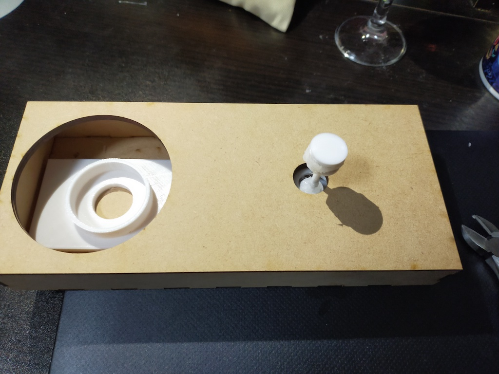

１班のテーマ：「光を用いて人をポジティブにするもの」
テーマ設定第６回の人物②を参照第７回までの途中経過はこちら
作品 ※動画あり
そのままライトアップして、お部屋をクラブに！ゼンマイで回して遊ぶことも可能！
- サイズ：縦10.5cm×横24.0cm×高さ12.5cm
- 使ったもの：3Dプリンター（フィラメントはPLA)、レーザーカッター（素材はMDF 2.5mm）、グルーガン（ダイソー、合成樹脂、接着剤として）、小型ランプ（ダイソー）
- 動いている様子の動画はこちら（YouTube)
解説
0. 作った経緯
「居酒屋で踊りながらトイレに消えていった男」のケースから、皆が普段溜め込んでいるストレスを吹っ飛ばし、嬉しいことがあれば更に気分を盛り上げてくれるグッズが必要ではないかと考えた。 班のテーマを「光を使ってポジティブにするもの」とし、私は居酒屋のトイレ（洗面台）のような狭い部屋でも使えるミラーボールを作って、もっと皆がどこでも踊り散らかせるようにしようと思った。※1. 当初、天井取り付けを想定していたが断念→洗面台など隙間スペースに据え置き型に変更した。
※2. 当初、紐での巻き取り式・１分ほど回転し続けることを想定していたが断念→現段階では「回すこともできる程度」。
1. ミラーボール部分

- Fusion360で半円を作り、パターンで均等に穴を開ける。
- 片方の半円はライトを入れる穴を開ける。
- 半円ずつ出力し、ライトを入れる側の筒に歯車を取り付ける。
- 天井にミラーボールを吊す案→回し方がうまく計画できず断念、台などに据え置くタイプに変更。
- データ→ミラーボール上部、ミラーボール下部、ミラーボールのギア
2. 歯車部分
横から見たパーツ↓上から見たパーツ↓

ひねる用のネジをつけたら＋百均のライトを置いたら↓
- モーターなど電動ではなく自力で動かしてみたいと思い方法を検索→ゼンマイ式にチャレンジ
- 参考サイト（外部サイト）はYouTube SolidWorks Vtuber【ソリッドワークス 3DCAD】【高クオリティ!!】3Dプリンタで作れるゼンマイ式のおもちゃ（車）が凄すぎる!!、usePocket.com お風呂で遊べる3Dプリンターで全パーツを作る「ゼンマイ式」ボート
- 本来はドアとゼンマイのネジを紐で繋ぎ、ドアの開閉でネジを捻って自動で回る事を想定したが、ネジの支柱が細く紐で引っ張ると折れた。→今回は手で回すだけで一旦中断。
- 本来は一度のひねりで１分ほど回るものを想定したが、私が技術的に追いつかず一瞬だけ回る仕様に。
→各パーツの摩擦が強いので一瞬で止まってしまう＋ばね部分が短く硬い＋ゼンマイの回転を調整する調速機をつけていない(理解追いつかず設置断念)。
調速機については MDL Hosei Univ. オルゴールが一定のテンポで演奏できる理由：ガバナー（調速機）の原理（外部サイト） - データ→土台・左、土台・右、ネジの下を留めるやつ、ネジ、ネジの下を留めるやつ、ギア１、ギア２、ギア３、ギア４
3. 箱部分
蓋↓蓋を閉めたら↓

- 歯車部分を隠して机に置けるように、台座となる箱を作った。
- 蓋なしで箱データをMaker Case（外部サイト）で作成した。
- 蓋部分は、出力した蓋なしの箱のサイズを測り、２枚の板を作成・張り合わせて、上から嵌め込み式の蓋を作成した（蓋の様式は班のメンバーの小杉さんの作品からヒントを得る）。
- データ→蓋、箱
{kind=link}
4. ランプ部分
- 当初、天井に付いた電球にはめ込むことを想定していたが、動かすアイデアがうまく設計できず断念。
→据え置き型にするのに別にランプを付ける必要あり。 - ダイソーで小型ランプ（電池式）を購入し使用する。
課題・感想
意図せずして相当難しいことをしてしまったらしいが、ゼンマイの仕組みの勉強になった。また、今回のテーマは日常観察から始まったが、意識して周囲を観察し深掘りして課題を考えることは普段見落としがちなので、これからも作り手としての視点を失わないようにしようと思った。更に、「人をポジティブにする」というテーマでグッズを作成したが、いかに人を幸せにするかという物づくりの本質を改めて考えさせられたと同時に、その製品の影には作り手の苦労・想いがあることを痛感した。今回の制作過程より、①細かいパーツの３Dプリンター出力では太さに若干のばらつきがありぴったりの寸法だとはまらない可能性があるので嵌め込みパーツはゆとりを持たせた設計にすること、②出力失敗を防ぎサポートを綺麗に取り除く為にも大きなパーツは小分け出力することを、今後に活かしたい。
課題は以下の通りである。
- 長時間回転させたい：ばね部分の柔軟性や長さの見直し、調速機の導入、摩擦の軽減、ボールの軽量化
- 手動からの脱却：個室に置くならばドア開閉時にドアと紐を繋いで実質自動でネジを巻けないか。ネジの支柱の強度を増す必要性。
- デザイン：カラフルな光（カラーフィルムの使用など）、ゼンマイ部分や土台のスリム化、より簡単な電源のON／OFF
１班のメンバーの作品リンク
前の画面に戻る